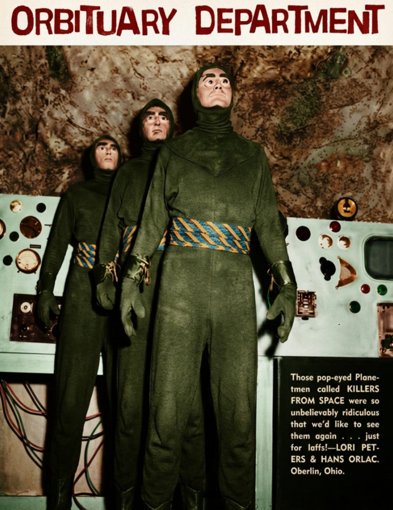

Orbituary Department
The pop-eyed planet-men called Killers from Space were so unbelievably ridiculous that we'd like to see them again. Just for laffs.
Every issue we set aside a page for the heroes and horrors who have flown their last mission. Some were zipped into rubber suits, some were bolted together in a prop shop, and all of them earned a place in the permanent orbit of our memories.
Final Transmissions
This month we salute the bug-eyed invaders of 1954, last seen retreating from Earth with their dials set to "ridiculous." Their control panels have gone dark, but their stares remain unblinking.
Readers Lori Peters and Hans Orlac of Oberlin, Ohio sent in the nomination, and the department agreed unanimously.
Remembered in Orbit
Services will be held at the launch pad of your choice. In lieu of flowers, the department asks that you send spare vacuum tubes, unused costume zippers, and clippings of your favorite scientifilm scenes.
The Obituary Department reminds you that no monster is ever truly gone. They are simply waiting for the late-night rerun, where every creature gets one more close-up.